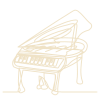
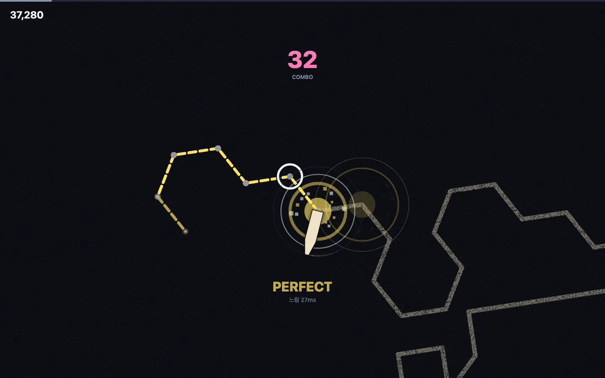
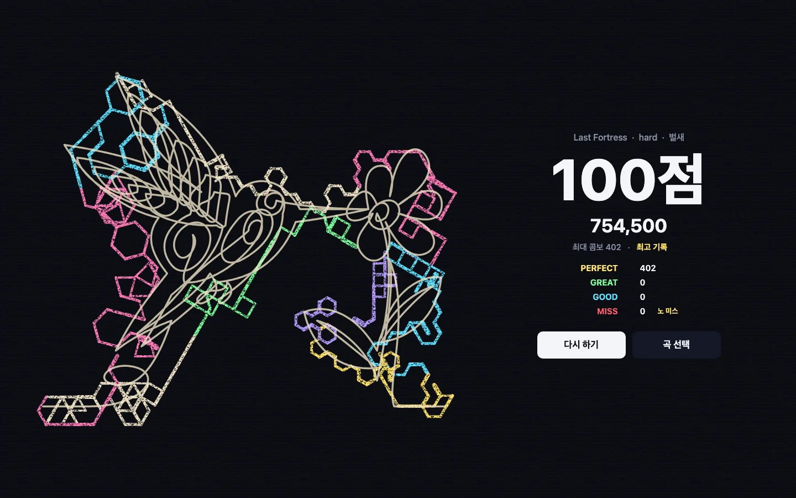

누를 건 키 하나
시작하면 곡 첫부분 리듬에 맞춘 딸깍 소리가 먼저 나옵니다. 크레파스 끝이 굵은 흰 고리에 닿는 순간 아무 키나 톡 누르면 됩니다. 화면을 누르거나 터치해도 됩니다. 하는 법 화면의 연습 길은 끝없이 이어지고, 제때 눌러야 다음 칸으로 갑니다.
키 하나로 박자를 맞추면 크레파스가 선을 쓱쓱 그어 주는 웹 리듬게임입니다. 곡이 끝나면 한 줄로 이어진 그림 한 장이 완성됩니다.
시작하면 곡 첫부분 리듬에 맞춘 딸깍 소리가 먼저 나옵니다. 크레파스 끝이 굵은 흰 고리에 닿는 순간 아무 키나 톡 누르면 됩니다. 화면을 누르거나 터치해도 됩니다. 하는 법 화면의 연습 길은 끝없이 이어지고, 제때 눌러야 다음 칸으로 갑니다.

길 위의 노트는 점으로, 속도나 방향이 바뀌는 곳은 점과 고리로 보입니다. 박자를 맞출 때마다 선이 한 칸씩 그어지고, 정확하게 맞출수록 선이 진하고 굵어집니다. Miss가 쌓이면 화면 가장자리가 빨개지고, 계속 놓치면 게임 오버됩니다.

길은 한 줄로 이어진 그림을 따라 나 있습니다. 마지막 노트가 지나면 화면이 멀어지면서 내가 그린 그림과 최고 점수가 나타납니다. 결과 화면에서 바로 다시 하거나 곡을 고를 수 있습니다.

쿼카, 오징어, 오리, 피아노처럼 곡마다 리듬에 잘 맞는 그림을 하나씩 골랐습니다. 두 곡이 같은 그림을 쓰지 않습니다.

Easy 20곡, Normal 21곡, Hard 20곡이 있습니다. 노트 수와 엇박, 촘촘한 구간을 보고 난이도를 나눕니다.
곡을 고르고 잠깐 기다리면 미리듣기가 나옵니다. 마음에 드는 곡을 귀로 고릅니다.

피아노 곡을 직접 만들어 넣었습니다. 이 곡은 그림 대신 박 간격으로 길을 놓아서 한 박은 직진, 반 박은 꺾임이고, 16박 안에 다시 나오는 구절은 앞길을 같은 색으로 칠합니다.

마지막 노트가 지나면 길 조각들이 그림 자리로 옮겨 가 실루엣이 되고, 그 위에 벌새 선화가 나타납니다.

곡마다 다른 소리 크기는 알아서 맞춰 주고, 컴퓨터와 폰 모두 음량을 바꿀 수 있습니다. 딸깍 소리를 따라 누르면 기기의 소리 지연도 맞춰 주고, 박자 초기화로 되돌릴 수 있습니다. 판마다 판정 수는 이 기기에만 남고, 기록 내보내기로 파일로 받습니다.

설치 없이 브라우저에서 바로 열립니다. 폰에서는 화면을 톡 누르면 됩니다.

노래의 박자를 분석해서 길을 만들고, 그 길이 한붓그리기 그림 한 장이 되게 했습니다. 처음에는 바느질 콘셉트였는데 크레파스 그림으로 바꿔서 완성했습니다. 스윙이나 셋잇단 곡은 박을 셋으로 나눈 자리에도 노트를 놓습니다. 곡은 박자 일치, 리듬 다양함, 반복, 그림 적합 점수로 걸러 60곡만 남기고, 새 곡은 박이 또렷한지 검사 도구로 먼저 거릅니다. 마지막에는 직접 만든 피아노 곡 Last Fortress를 더했습니다.